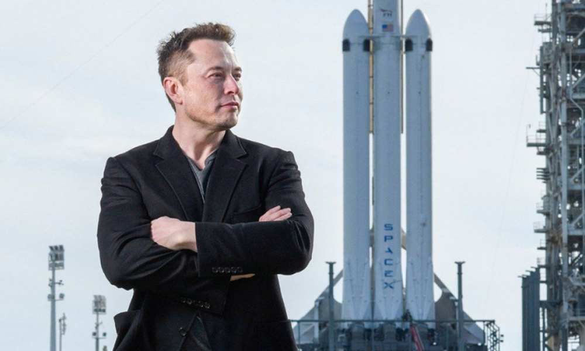

Elon Musk
Creador de grandes empresas como: Tesla, SpaceX, PayPal, etc.

Elon posando con el fondo de uno de sus coetes listo para ser lanzado al espacio.
Es un hombre que hace todo lo que se propone, el es capaz
de incluso solo dormir un par de horas para
conseguir sus metas u objetivos,
es una combiacion de Thomas Edison, Henry Ford y Steve Jobs.
Creacion de empresas
- SpaceX: 6 de mayo de 2002
- Tesla: 1 de julio de 2003
- SolarCity: 4 de julio de 2006
- OpenAI: 11 de diciembre de 2015
- Neuralink: julio de 2016
- The Boring Compaby: 17 de diciembre del 2016
"Elon Musk aspira a nada menos que salvar la especie humana de la aniquilacion."
Ashlee Vance
Para mas informacion puedes visirtar el siguiente enlace, Biografia Elon Musk